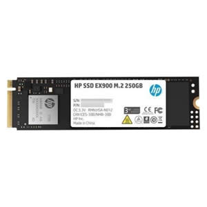

DISCOS
HP
SSD HP S700 250GB 2.5Inch SATA Interno
SSD HP S700 250GB M.2 SATA III 3D TLC NAND Interno
SSD HP EX900 250GB M.2 PCIe 3.1 X4 NVMe 3d TLC NAND Interno

SSD HP S650 480GB 2.5Inch SATA 3.0 3D TLC NAND Interno
Kingston
SSD KINGSTON 120GB A400 SATA 3 2.5Inc. FOR PC O NOTEBOOK 7mm
SSD KINGSTON 120GB A400M SATA M.2 2280 Interno
SSD KINGSTON 240GB A400 SATA 3 2.5Inc. FOR PC O NOTEBOOK 7mm
SSD KINGSTON 240GB A400M SATA m.2 2280 Interno